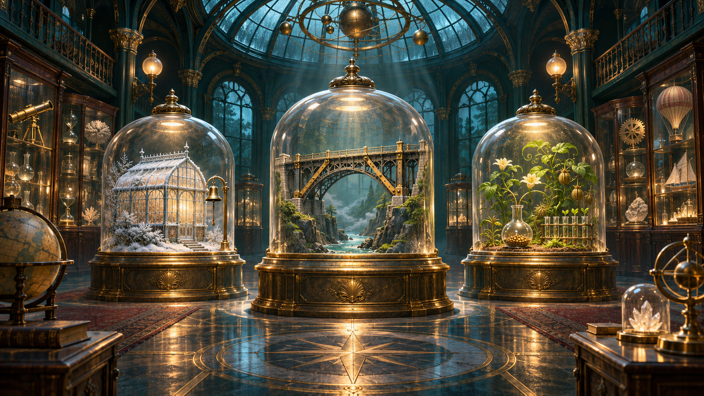

<!doctype html><html lang="en"><meta charset="utf-8"><meta name="viewport" content="width=device-width,initial-scale=1"><title>The Museum of Almost</title><style>*{box-sizing:border-box}body{margin:0;background:#12191e;color:#eee7d9;font:17px Georgia}header,main{max-width:1160px;margin:auto;padding:25px}header{display:flex;align-items:center;justify-content:space-between;border-bottom:1px solid #485253}button,select{font:14px system-ui;padding:12px 18px;background:#e5bd77;border:0;border-radius:4px;color:#182126;cursor:pointer;margin:4px}button:hover{filter:brightness(1.15)}button:disabled{opacity:.4;cursor:default}.secondary{background:transparent;color:#e5bd77;border:1px solid #6d6659}h1{font-size:clamp(52px,8vw,94px);font-weight:400;line-height:1;margin:24px 0}h2{font-size:32px;font-weight:400}p,li{line-height:1.65}small,label{font:12px system-ui;letter-spacing:2px;color:#e5bd77}.grid{display:grid;grid-template-columns:1.5fr 1fr;gap:24px}.panel{background:#1a252b;border:1px solid #435158;padding:24px;border-radius:9px;margin:15px 0}.worlds{display:grid;grid-template-columns:1fr 1fr;gap:16px}.world{padding:24px;background:#101b23;text-align:center;border:1px solid #52656a;border-radius:50% 50% 5px 5px;min-height:170px}.symbol{font-size:56px;color:#b0d2cd}.muted{color:#aebbbd}label{display:block;margin:18px 0 8px}select{width:95%;background:#293b43;color:#fff}table{width:100%;font:14px system-ui;border-collapse:collapse}td,th{padding:12px;text-align:left;border-bottom:1px solid #435158}.feedback{border-left:3px solid #e5bd77;padding:15px;line-height:1.6}textarea{width:100%;background:#101b23;color:#fff;padding:15px;min-height:100px}a{color:#e5bd77}@media(max-width:750px){.grid{grid-template-columns:1fr}header{flex-wrap:wrap}.worlds{gap:5px}.world{padding:12px}}.hero-art{width:100%;height:clamp(220px,40vw,430px);object-fit:cover;border:1px solid #756047;border-radius:10px;margin:25px 0;display:block}.exhibit-art{width:100%;height:185px;object-fit:cover;object-position:var(--focus) 53%;border-radius:80px 80px 5px 5px;margin:16px 0}.exhibit-window{height:200px;overflow:hidden;border-radius:80px 80px 5px 5px;margin:16px 0;position:relative}.exhibit-window img{height:360px;width:640px;max-width:none;position:absolute;top:-65px;left:50%;transform:translateX(var(--shift))}.world{overflow:hidden}.gallery-art{height:230px;object-fit:cover;object-position:center 52%}@media(prefers-reduced-motion:no-preference){.hero-art{animation:reveal .8s ease-out}@keyframes reveal{from{opacity:.2;transform:translateY(8px)}to{opacity:1;transform:translateY(0)}}}
body{background:#0b1418;font-family:Georgia,'Times New Roman',serif}header{max-width:none;padding:19px 5vw;background:#0b1418;border-bottom:1px solid #b8a27633}header>span{font:12px system-ui;letter-spacing:3px;color:#e5d7be}header button{font-size:11px;letter-spacing:1px;padding:8px 12px}main{max-width:1400px;padding:30px 4vw}main:has(.entrance){padding:0;max-width:none}button{transition:background .2s,transform .2s;border-radius:2px}button:hover{transform:translateY(-2px)}.entrance{position:relative;min-height:650px;height:calc(100vh - 80px);max-height:900px;isolation:isolate;overflow:hidden}.entrance-bg{position:absolute;inset:0;width:100%;height:100%;object-fit:cover;object-position:65% center;z-index:-3}.entrance-shade{position:absolute;inset:0;background:linear-gradient(90deg,#081114f5 0%,#081114e0 25%,#08111465 55%,#08111405 85%),linear-gradient(0deg,#0b1418 0%,transparent 30%);z-index:-2}.entrance-copy{padding:90px 6vw;max-width:850px}.entrance-copy small{font-size:10px;letter-spacing:3px}.entrance-copy h1{font-size:clamp(45px,5.5vw,82px);line-height:1.08;letter-spacing:-2px;margin:30px 0;color:#f3ece0}.entrance-copy h1 em{color:#e4be7f;font-weight:400}.entrance-copy p{font:15px/1.9 system-ui;color:#c4c7bf;margin-bottom:30px}.entrance-copy button{padding:16px 22px;font-size:12px}.entrance-copy button span{margin-left:30px}.entrance-meta{font:9px system-ui;letter-spacing:1.6px;margin-top:38px;color:#abb5b2}.entrance-meta i{padding:0 10px;color:#b79c69}.art-caption{position:absolute;right:5vw;bottom:60px;font:9px/2 system-ui;letter-spacing:2px;color:#eee3cb;text-align:right}.art-caption b{font-weight:400}.collection{padding:55px 6vw 65px;max-width:1500px;margin:auto}.section-heading{display:flex;align-items:end;justify-content:space-between;gap:20px;margin-bottom:25px}.section-heading h2{font-size:36px;margin:12px 0}.section-heading p{font:12px system-ui;color:#95a6a6}.exhibit-cards{display:grid;grid-template-columns:repeat(3,1fr);gap:24px}.exhibit-card{padding:0;margin:0;background:#142126;border:1px solid #42514d;text-align:left;color:#eee7d9;overflow:hidden}.card-image{height:230px;position:relative;overflow:hidden}.card-image img{width:300%;height:100%;max-width:none;object-fit:cover;position:absolute;left:var(--image-position);transform:translateX(calc(-1 * var(--image-position)))}.card-image:after{content:'';position:absolute;inset:0;background:linear-gradient(transparent 60%,#142126)}.card-image>span{position:absolute;bottom:15px;left:22px;font:9px system-ui;letter-spacing:2px;z-index:1}.card-copy{padding:8px 24px 25px}.card-copy small{font-size:8px;letter-spacing:1.5px}.card-copy h3{font:25px/1.2 Georgia;margin:16px 0}.card-copy p{font:12px/1.8 system-ui;color:#aebbb7;min-height:45px}.card-link{font:10px system-ui;letter-spacing:1px;color:#e4be7f;display:block;margin-top:22px}.orientation{border-top:1px solid #435148;border-bottom:1px solid #435148;padding:40px 6vw;display:grid;grid-template-columns:1.2fr 1fr 1fr 1fr;gap:35px;background:#101d21}.orientation h2{font-size:27px;margin:15px 0}.orientation b{font:12px system-ui;color:#dec293}.orientation p{font:12px/1.9 system-ui;color:#acb6b0}footer{text-align:center;padding:35px;font:11px/2 system-ui;color:#a0aaa5}footer span{font-size:8px;letter-spacing:2px;color:#6f827f}.world{border-radius:8px;background:linear-gradient(#203139,#101b23);border-color:#6d715b;padding:18px}.world small{font-size:10px}.world label{font-size:10px;letter-spacing:1px}.world select{border:1px solid #5c6c69;border-radius:3px;font-size:13px}.exhibit-window{border-radius:80px 80px 6px 6px;border:1px solid #a58b5855;height:230px}.exhibit-window img{height:410px;width:730px;top:-75px}.panel{border-color:#46554f;border-radius:5px}.panel h2{font-size:26px}.feedback{background:#0c191e;padding:18px;font:14px/1.8 system-ui}main>h2{font-size:40px}main>p{max-width:900px;color:#bcc9c4}details{font:13px/1.8 system-ui;padding:15px 0;color:#c2cfc6}th{font-size:10px;letter-spacing:1px;color:#cfb582}td{font-size:12px}button.secondary{border-color:#8f815e;color:#dfc698}aside .secondary{font-size:13px;text-align:left;line-height:1.6;width:100%;padding:14px}aside .panel>small{font-size:9px}@media(max-width:800px){.entrance{min-height:640px;height:auto}.entrance-copy{padding:65px 7vw 100px}.entrance-copy h1{font-size:53px}.entrance-shade{background:linear-gradient(90deg,#081114f5,#08111490),linear-gradient(0deg,#0b1418,transparent)}.art-caption{display:none}.exhibit-cards{grid-template-columns:1fr}.orientation{grid-template-columns:1fr 1fr}.section-heading{display:block}.entrance-meta{font-size:8px;line-height:2}.collection{padding:40px 6vw}.card-image{height:260px}}@media(max-width:430px){.orientation{grid-template-columns:1fr}.entrance-copy h1{font-size:44px}.entrance-copy small{font-size:8px}header{gap:12px}header>span{font-size:10px}.entrance-copy button{padding:13px}.worlds{grid-template-columns:1fr}.world{border-radius:6px}}
</style><header><span>◈ THE MUSEUM OF ALMOST</span><nav><button class="secondary" onclick="home()">Entrance</button><button class="secondary" onclick="about()">About the course</button><button class="secondary" onclick="audio=!audio;this.textContent=audio?'Audio on':'Audio off'">Audio off</button></nav></header><main id="app"></main><script>
const app=document.querySelector('#app');let audio=false,level=0,energy=5,score=0,log=[],all=[],solved=false,ending='';const rooms=[{name:'The Bell That Prevented Nothing',symbol:'♧',intro:'A greenhouse nearly froze. The record says: more alarm bells, more damaged plants. The curator wants to remove every bell. Investigate before you let her.',factor:'Bell',context:'Night temperature',contexts:['Mild','Freezing'],treat:['Silent','Ringing'],claims:['Bells cause frost damage. Remove them.','Cold causes both alarms and damage; bells are a warning.'],answer:1,hint:'Compare silent and ringing bells at the SAME temperature. Then change temperature alone.'},{name:'The Bridge That Never Fell',symbol:'♜',intro:'A brass brace is credited with saving a miniature bridge. But the braced bridge carried less cargo. Design a fair comparison before spending the museum’s last brass.',factor:'Brace',context:'Cargo',contexts:['Light','Heavy'],treat:['Absent','Installed'],claims:['The brace reduces failure under equal cargo. Install it.','The brace has no effect; cargo explains everything.'],answer:0,hint:'Use equal cargo in both worlds. Heavy cargo makes the brace’s effect easier to see.'},{name:'The Seed That Survived Tomorrow',symbol:'❦',intro:'A coating saved seeds in a dry chamber. The curator plans to coat every seed, including the wetland collection. Your last exhibit asks: how far does the evidence travel?',factor:'Coating',context:'Habitat',contexts:['Dry','Wet'],treat:['Bare','Coated'],claims:['The coating helps everywhere. Coat every seed.','The coating helps in dry conditions but harms in wet conditions. Use selectively.'],answer:1,hint:'Run a matched comparison in BOTH habitats. An effect can depend on context.'}];function home(){app.innerHTML=`<section class="entrance"><div class="entrance-shade"></div><div class="entrance-copy"><small>THE DEPARTMENT OF UNHAPPENED DISASTERS</small><h1>Some things<br>never happened.<br><em>Find out why.</em></h1><p>Three impossible exhibits. Five fragments of time.<br>A museum waiting for you to put cause before effect.</p><button id="start-btn" onclick="start()">Enter the museum <span>↗</span></button><button class="secondary" onclick="about()">Read the curator’s brief</button><div class="entrance-meta">AN EXPERIMENTAL DETECTIVE STORY <i>•</i> 15–20 MIN <i>•</i> THREE GALLERIES</div></div><div class="art-caption">COLLECTION NO. 001—003<br><b>THE THINGS THAT DIDN’T HAPPEN</b></div></section><section class="collection"><div class="section-heading"><div><small>TONIGHT’S COLLECTION</small><h2>Every almost has a cause.</h2></div><p>Observe. Intervene. Follow the evidence.</p></div><div class="exhibit-cards">${rooms.map((r,i)=>`<button class="exhibit-card" onclick="start()"><div class="card-image" style="--image-position:${['22%','50%','78%'][i]}"><span>0${i+1} / INVESTIGATION</span></div><div class="card-copy"><small>${['CORRELATION ≠ CAUSATION','THE FAIR COMPARISON','THE LIMITS OF EVIDENCE'][i]}</small><h3>${r.name}</h3><p>${['A warning bell stands accused of freezing a garden.','One bridge. Two histories. An unfair miracle.','What saves a seed here may doom it elsewhere.'][i]}</p><span class="card-link">Examine the evidence ↗</span></div></button>`).join('')}</div></section><section class="orientation"><div><small>YOUR CURATOR’S KIT</small><h2>Small tools.<br>Consequential questions.</h2></div><div><b>01 / Variable Lock</b><p>Keep the context constant. Change only the suspected cause.</p></div><div><b>02 / Twin-World Chamber</b><p>Spend a time shard to compare two possible histories.</p></div><div><b>03 / Evidence Thread</b><p>Restore each exhibit with a verdict your experiments support.</p></div></section><footer>No countdown. Five shards per gallery. Rewind freely. Earn three provenance seals.<br><span>THE MUSEUM OF ALMOST — A PLAYABLE STUDY OF CAUSE AND EFFECT</span></footer>`}function start(){level=0;score=0;all=[];enter()}function enter(){energy=5;log=[];solved=false;room()}function room(){let r=rooms[level];app.innerHTML=`<small>GALLERY ${level+1} / 3 · ${energy} TIME SHARDS · ${score} PROVENANCE POINTS</small><h2>${r.name}</h2><p>${r.intro}</p><div class="grid"><section><div class="worlds">${[0,1].map(i=>`<div class="world"><small>WORLD ${i?'B / INTERVENTION':'A / COMPARISON'}</small><div class="exhibit-window"></div><label for="t${i}">${r.factor}</label><select id="t${i}">${r.treat.map((x,j)=>`<option value="${j}" ${j===i?'selected':''}>${x}</option>`).join('')}</select><label for="c${i}">${r.context}</label><select id="c${i}">${r.contexts.map((x,j)=>`<option value="${j}">${x}</option>`).join('')}</select></div>`).join('')}</div><button onclick="run()" ${energy===0||solved?'disabled':''}>Run twin worlds · 1 shard</button><button class="secondary" onclick="document.querySelector('#c1').value=document.querySelector('#c0').value;notice('Variable Lock engaged: both contexts now match.')">Engage Variable Lock</button><div class="panel"><small>EVIDENCE THREAD</small><div style="overflow:auto"><table><thead><tr><th>Trial</th><th>World A</th><th>World B</th><th>Design</th></tr></thead><tbody>${log.map((x,i)=>`<tr><td>${i+1}</td><td>${x.a}%</td><td>${x.b}%</td><td>${x.valid?'Controlled':'Confounded'}</td></tr>`).join('')}</tbody></table></div><p class="muted">${level===2?'Seed survival':'Damage / failure'} rate. These are exact outputs of a fictional deterministic model, not measured real-world statistics.</p></div></section><aside><div class="panel"><small>CURATOR ADA / GUIDANCE</small><p id="feedback" class="feedback" role="status">${level===0?'A fair experiment changes the suspected cause while keeping the other conditions the same. Look for a pattern across temperatures.':'Design your test. Which variable must stay constant?'}</p><details><summary>Open field hint</summary><p>${r.hint}</p></details><h2>Seal a verdict</h2>${r.claims.map((x,i)=>`<button class="secondary" onclick="verdict(${i})" ${solved?'disabled':''}>${x}</button>`).join('')}${solved?'<button onclick="next()">Enter the next gallery ↗</button>':''}${energy===0&&!solved?'<button onclick="enter()">Rewind this gallery</button>':''}</div></aside></div>`}function notice(t){document.querySelector('#feedback').textContent=t}function outcome(t,c){if(level===0)return c?80:5;if(level===1)return c?(t?20:90):(t?0:10);return c?(t?40:90):(t?85:25)}function run(){if(!energy||solved)return;let t0=+document.querySelector('#t0').value,t1=+document.querySelector('#t1').value,c0=+document.querySelector('#c0').value,c1=+document.querySelector('#c1').value;let valid=c0===c1&&t0!==t1;log.push({t0,t1,c0,c1,valid,a:outcome(t0,c0),b:outcome(t1,c1)});energy--;room();let x=log.at(-1);notice(valid?`Controlled comparison: ${x.a}% versus ${x.b}%. ${x.a===x.b?'Changing the suspected cause did not change the outcome in this context.':'The outcome changed when only the suspected cause changed.'} Record the context before generalizing.`:'This cannot isolate the suspected cause: either the contexts differ or the treatment never changed. Use Variable Lock, then choose different treatments.');tone(300)}function verdict(i){if(solved)return;let contexts=new Set(log.filter(x=>x.valid).map(x=>x.c0)),enough=level===1?contexts.has(1):contexts.size===2;if(!enough){notice(level===1?'Insufficient evidence: compare braced and unbraced bridges under the same HEAVY cargo.':'Insufficient evidence: collect controlled treatment comparisons in BOTH contexts before making this claim.');return}if(i!==rooms[level].answer){notice('The evidence does not support this verdict. Read the controlled comparisons and revise. A relationship in observational records does not by itself establish causation.');tone(140);return}solved=true;score+=100;all.push({gallery:rooms[level].name,evidence:log,verdict:rooms[level].claims[i]});room();notice(['Restored. Temperature is a common cause of ringing and damage. Removing a warning does not remove the hazard.','Restored. Under equal heavy cargo, the brace reduces failure from 90% to 20% in this model. It reduces risk; it does not guarantee safety.','Restored. The effect changes with habitat. A successful intervention in one setting can be harmful in another.'][level]);tone(660)}function next(){if(!solved)return;if(++level<3)enter();else finale()}function finale(){app.innerHTML=`<small>THREE EXHIBITS RESTORED / ${score} POINTS</small><h1>The things<br>that <em>didn’t happen.</em></h1><p>Ada places three new labels beneath the glass. No heroes. No miracles. Just causes, carefully tested.</p><div class="panel"><h2>Your last curatorial choice</h2><p>The sponsor asks you to label these simulations “proof that our products work in the real world.” What will the museum say?</p><button onclick="closeStory(false)">Accept the sponsor’s label</button><button onclick="closeStory(true)">Publish the evidence and its limits</button><p id="ending" role="status"></p><label for="reflection">YOUR FIELD NOTE</label><textarea id="reflection" placeholder="Explain one confounder, one fair comparison, and why a result might not generalize."></textarea><button onclick="report()">Download evidence portfolio</button></div><button class="secondary" onclick="start()">Replay the museum</button>`}function closeStory(ok){ending=ok?'The Honest Museum':'The Museum of Convenient Stories';document.querySelector('#ending').textContent=ok?'ENDING / THE HONEST MUSEUM. The funding is smaller. The labels are accurate. Controlled simulations support claims within their assumptions; real applications require appropriate data, replication and safety testing.':'ENDING / THE MUSEUM OF CONVENIENT STORIES. The sponsor pays, but the public mistakes a simplified simulation for real-world evidence. You can revise the label and choose transparency.';tone(ok?660:140)}function report(){let b=new Blob([JSON.stringify({title:'The Museum of Almost',score,ending,evidence:all,reflection:document.querySelector('#reflection').value},null,2)],{type:'application/json'}),a=document.createElement('a');a.href=URL.createObjectURL(b);a.download='museum-evidence-portfolio.json';a.click();URL.revokeObjectURL(a.href)}function tone(hz){if(!audio)return;let ac=new AudioContext(),o=ac.createOscillator(),g=ac.createGain();o.frequency.value=hz;g.gain.value=.04;o.connect(g).connect(ac.destination);o.start();o.stop(ac.currentTime+.18);o.onended=()=>ac.close()}function about(){app.innerHTML=`<small>ABOUT THE COURSE / IDAT7220 STEM GAME</small><h1>The science<br>of <em>because.</em></h1><div class="panel"><h2>The Museum of Almost</h2><p><b>STEM topic:</b> Causal inference and controlled experimental design.<br><b>STEM branches:</b> Science (scientific investigation) and Mathematics (comparisons of outcome rates).</p><p>Become a curator of disasters that never happened. Investigate miniature worlds, lock confounding variables, and run paired experiments. Restore three exhibits by distinguishing correlation from causation, testing interventions fairly, and deciding when evidence can travel beyond its original context.</p><h2>Learning objectives</h2><ol><li>Identify a common-cause confounder and explain why correlation alone cannot establish causation.</li><li>Design paired comparisons that vary one treatment while holding the contextual variable constant.</li><li>Compare outcome rates to justify a causal claim within a specified simulation.</li><li>Evaluate whether intervention effects generalize across contexts and communicate model limitations.</li></ol><p><b>Audience:</b> Ages 15+, basic percentages; no prior statistics required. <b>Duration:</b> 15–20 minutes. <b>Access:</b> Browser, keyboard (Tab, Enter, arrow keys), mouse or touch. Optional audio is supplementary; all feedback is available as text.</p><h2>How learning becomes play</h2><p>Predict → control variables → run a paired intervention → inspect consequences → revise → justify a verdict. Five time shards encourage deliberate experiments; rewinds enable mastery. Guidance fades from a worked principle to an open investigation. Seals depend on evidence rather than guessing the correct label.</p><p><b>Learning evidence:</b> Gallery 1 identifies a confounder; Gallery 2 demonstrates procedural control; Gallery 3 tests transfer and conditional effects. The final choice and written field note support evaluation and reflection. The downloadable portfolio contains the trial history and verdicts.</p><p><b>Optional partner activity:</b> One learner predicts and explains; the other operates the chamber. Swap roles each gallery. Discuss which comparison supports each conclusion. Solo play remains complete.</p><p><b>Facilitator guide:</b> Ask for predictions before trials. After a failed design, ask what else changed. Debrief why an alarm can correlate with harm without causing it, and why controlled model evidence is not a universal guarantee.</p><h2>Model and evidence limits</h2><p>Each world uses fixed fictional outcome rates. There is no sampling variability, unknown confounding, measurement error or randomized assignment in this simplified paired simulation. Context and treatment exhaust its modeled inputs. Real experiments often require randomization, adequate samples, uncertainty estimates, replication and ethical review. No physical bridge or plant-safety advice is implied.</p><p><b>Design rationale:</b> Mechanics: resource-limited paired experiments and evidence-gated verdicts. Dynamics: exploratory versus planned testing and revision. Aesthetics: curiosity, responsibility and discovery. Feedback explains the scientific consequence of each design.</p><p><b>Further reading:</b> OpenStax Introductory Statistics 2e, §1.4, Experimental Design and Ethics. All museum narrative, fictional datasets, interface and procedural interactions were created for this project. Museum artwork is AI-generated illustrative concept art, not photographic or experimental evidence.</p></div><button onclick="home()">Return to entrance</button>`}window.render_game_to_text=()=>JSON.stringify({level,energy,score,log,solved,ending});window.advanceTime=()=>{};home();</script></html>
